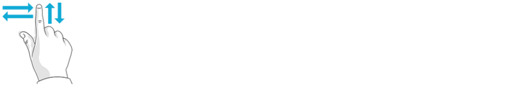

The touchscreen interface supports the following Windows touch gestures:

| How it’s done | Use |
|---|---|
|
Quickly tap on an element once. |
The tapped element will be opened, selected, or activated. This gesture is the equivalent of clicking the left mouse button. |

| How it’s done | Use |
|---|---|
| Drag a finger across an area on the screen (to the left, right, up, or down) |
This gesture is the equivalent of using the scroll wheel. |

| How it’s done | Use |
|---|---|
| Touch the screen or an element with at least two fingers and move your fingers towards or away from each other. |
|
| How it’s done | Use |
|---|---|
| Using your thumb, select the part and move your index finger to rotate it left or right. |
|

The virtual keyboard is displayed automatically when you touch inside an input field. Tapping on OK will save your input.